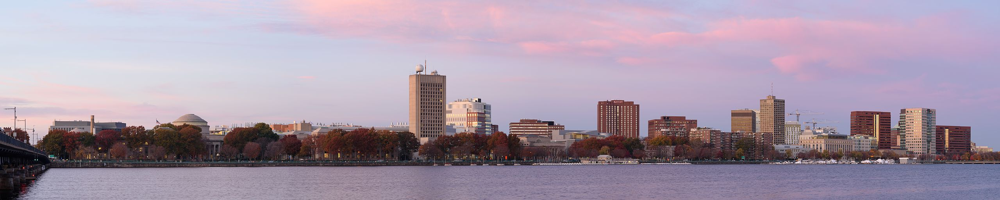

Workshop on High Performance Compilers for Domain-Specific Languages (HPCDSL'19)
Cambridge, MA. April 11'th and 12'th, 2019
The development of compilers for high performance DSLs (Domain Specific Languages) is gaining popularity in industry and academia due to the increasing complexity and diversity of hardware architectures, the ability of DSLs to generate highly efficient code for these architectures and the ease of DSL use. The goal of this workshop is to provide a venue for researchers and students to present their work in the area of compilers for high performance DSLs. The workshop focuses the design and implementation of compilers for high performance DSLs, code optimization techniques for DSL compilers and code portability for DSL compilers.
Organizers
Riyadh Baghdadi, Fredrik Kjolstad and Saman Amarasinghe
Participation
Participants interested in giving a presentation are invited to submit a long abstract (two pages) summarizing their proposed presentation. Proposals should be sent to
Venue
MIT Ray and Maria Stata Center 32 Vassar St. Cambridge, MA 02139, USA